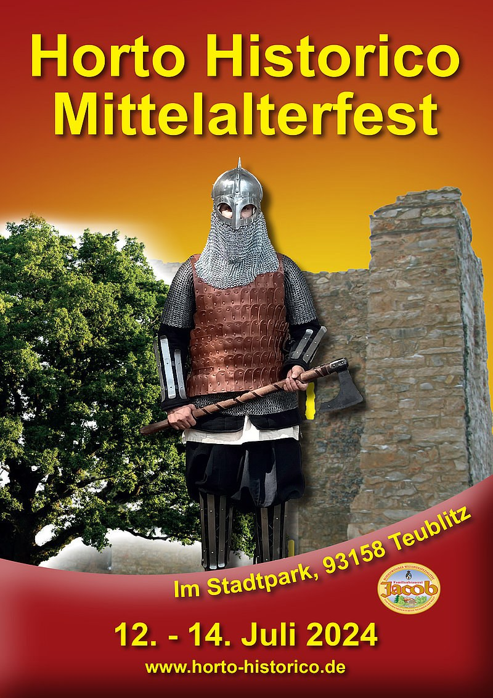

Musik mit Gregs Confusus
Auftrittszeit und Bühne werden ergänzt.
Das Mittelalterfest im Stadtpark Teublitz
⚔ Geschichte erleben · Musik · Markt · Lagerleben ⚔
Entdecke das Horto Historico in Teublitz: Musik, Handwerk, historische Lager und mittelalterliche Atmosphäre im Stadtpark an der Burgruine.
Das neue Festprogramm und die aktuellen Termine werden hier veröffentlicht, sobald sie bestätigt sind.
Programm entdecken
Tippe auf einen Programmpunkt, um Fotos und weitere Informationen zu sehen.
Auftrittszeit und Bühne werden ergänzt.
Das bestätigte Programm für Freitag, Samstag und Sonntag folgt.
Händler, Lagergruppen und Vorführungen werden ergänzt.
Ein erster atmosphärischer Entwurf – die tatsächlichen Wege und Standorte müssen noch anhand eines verlässlichen Plans eingetragen werden.
Nicht zur Orientierung vor Ort verwenden: Eingänge, Bühnen, Toiletten und Stände sind noch nicht verifiziert.
Ort: Stadtpark Teublitz, 93158 Teublitz.
Aktuelle Termine, Eintritt, Anfahrt, Öffnungszeiten und Standorte werden nach Bestätigung ergänzt.